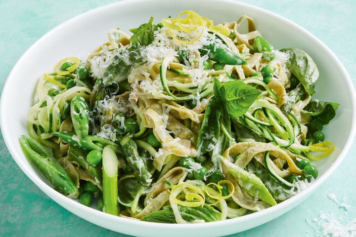

Healthier pasta primavera

This lemony, basil, garlic pasta will make your spring greens sing. For a fresh and healthy dinner, have this vegie packed pasta on the table in 30 minutes. With gluten-free, low-cal edamame fettuccine, this is one feel-good pasta dish.
Ingredients
- 150g (1 cup) frozen green peas
- 150g sugar snap peas, trimmed, halved
- 1 bunch asparagus, trimmed, cut into 2cm pieces
- 200g packet Slendier Fettuccine Organic Edamame
- 2 tbsp extra virgin olive oil
- 1 large leek, trimmed, thinly sliced
- 2 garlic cloves, crushed
- 2 large zucchini, cut into noodles using a spiraliser (see tip)
- 80g (1/3 cup) Philadelphia Cooking Light cream
- 1 tbsp fresh lemon juice
- 1 cup fresh basil leaves, plus extra, to serve
- Thin lemon rind strips, to serve
- 20g (1/4 cup) finely grated parmesan
Steps
- Cook the peas , sugar snap peas and asparagus in a saucepan of boiling water for 2-3 minutes or until tender crisp. Refresh under cold running water. Drain.
- Cook the pasta in a large saucepan of lightly salted boiling water following packet directions or until al dente. Drain, reserving 80ml (1 ⁄3 cupful) cooking liquid.
- Meanwhile, heat oil in a large non-stick frying pan over medium heat. Add the leek. Cook, stirring, for 5 minutes or until softened. Add the garlic . Cook, stirring, for 30 seconds or until aromatic. Add the zucchini and cook, stirring, for 1-2 minutes or until bright green and tender crisp. Add the pea mixture and stir until combined. Pour in cream and 1 tablespoonful of reserved cooking liquid. Stir until smooth and well combined, adding a little more reserved liquid if too thick.
- Add the pasta, lemon juice and basil . Toss. Divide among serving bowls. Sprinkle with parmesan , lemon rind and extra basil.